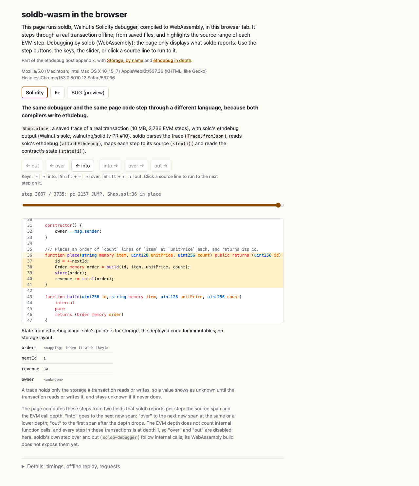
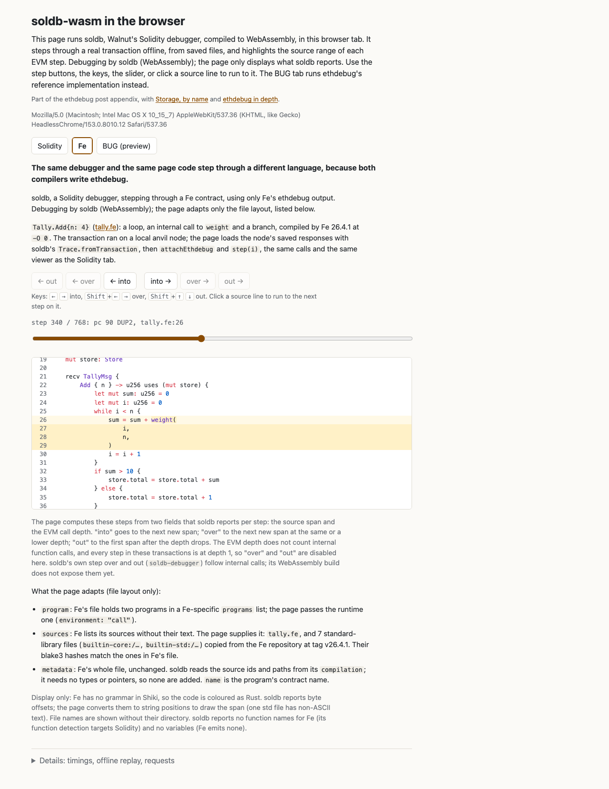
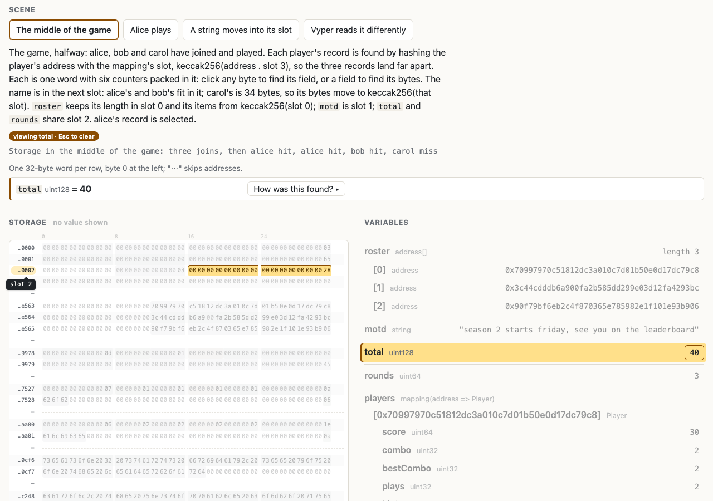

ethdebug in depth
The details behind our post introducing ethdebug: the demos, pointers in full, optimized code, where each compiler stands, contracts on mainnet, and our measurements.
Draft: items tagged to verify are still being checked.
Part of the ethdebug post appendix, with Storage, by name and soldb-wasm in the browser.
ethdebug is an open specification for the debug data a compiler writes next to its EVM bytecode: what each instruction means in the source, and where each value lives. We, the ethdebug team at Argot, maintain it. This page holds what the post leaves out. Facts are as of October 2026.
Key: to verify means we have not yet checked this claim for publication. plan means a stage that is planned or in progress, not done; we give no dates for those.
1. Try it
Two pages run in your browser with nothing to install, and one small script runs in Node.
Step through a transaction with soldb
soldb is Walnut's open-source Solidity debugger. Walnut is the team that builds solc's ethdebug support. soldb is written in Rust and also compiles to WebAssembly. On this page, soldb runs in your browser tab. It reads a saved transaction trace and the compiler's ethdebug output, and maps each EVM step to its source. The page only shows the source range soldb reports for each step. Use the slider or the line buttons to step. A Solidity | Fe switch loads a second transaction, compiled by Fe, a separate contract language. soldb is unchanged: the same debugger steps through both languages, because both compilers write the same format. The page adapts only the layout of Fe's file, and says so (details in Fe below). For Solidity, a state panel shows the contract's state at each step, read by soldb from ethdebug alone: solc's pointers for storage and the deployed code for immutables, with no storage layout. This uses Walnut's next solc stage (walnuthq/solidity #10) and soldb pull request #181, both open.


See storage by name
This page shows a contract's storage by Solidity name, before and
after a transaction, and marks what changed. Click any value
("show how") to see the rule solc wrote for it, each expression
evaluated, and the bytes it read. @ethdebug/pointers, our
TypeScript reference library, finds each value's bytes from the
pointer templates in solc's ethdebug output (see
Pointers, in full). The page then decodes the
values itself, with its own small decoder for each type: a stand-in
for the format's planned interpretation layer (see
Placement, interpretation, resolution). The
contracts are compiled with Walnut's next solc stage, open on their fork
(walnuthq/solidity #10). Each variable's base slot comes from the
program context it writes, so the page needs no storageLayout.
The page lists the remaining gaps at the bottom.

accounts[sender].nonce: the
mapping rule hashes the key and slot, then the struct rule places
nonce in the next slot, at bytes 24 to 31.Ten lines that step through Solidity and Fe
This script prints the source lines a transaction ran. It takes an
ethdebug program, a transaction trace and the source file. The trace
comes from debug_traceTransaction on anvil, Foundry's
local node, started with --steps-tracing. The script needs
only Node's standard library. The core is 10 lines (lines 13 to 22);
two more lines pick out Fe's program. Source:
step.mjs.
import { readFileSync as read } from "fs";
const [programFile, traceFile, sourceFile] = process.argv.slice(2);
const json = (f) => JSON.parse(read(f, "utf8"));
const source = read(sourceFile, "utf8");
const trace = json(traceFile).structLogs;
// Input step. solc: the file is the program. Fe's file wraps programs
// differently today: pick its "call" program.
let program = json(programFile);
if (program.programs) program = program.programs.find((p) => p.environment === "call");
// Core: pc -> source range, then print each new source line.
const range = new Map(program.instructions.map((i) => [i.offset, i.context?.code]));
let last;
for (const { pc } of trace) {
const code = range.get(pc);
if (code?.source.id !== 0) continue; // not in this file (Fe: std library)
if (code.range.length > source.length * 0.8) continue; // compiler glue
const line = source.slice(0, code.range.offset).split("\n").length;
if (line !== last) console.log(line + ": " + source.split("\n")[line - 1].trim());
last = line;
}Solidity
The contract has an external run that calls two
internal functions:
// SPDX-License-Identifier: MIT
pragma solidity ^0.8.0;
contract Calls {
uint256 public total;
function add(uint256 a, uint256 b) internal pure returns (uint256) {
require(a < 1000, "too big");
return a + b;
}
function twice(uint256 x) internal pure returns (uint256) {
return add(x, x);
}
function run(uint256 x) external {
total = twice(x) + add(x, 1);
}
}We compiled it with via-IR, the optimizer off and ethdebug turned
on, using the #16990 build. Released solc writes the same source
ranges.
to verify: run the same script on solc 0.8.37 output
The full output for run(5):
$ node step.mjs solc-program.json solc-trace.json Calls.sol
12: function run(uint256 x) external {
13: total = twice(x) + add(x, 1);
12: function run(uint256 x) external {
13: total = twice(x) + add(x, 1);
9: function twice(uint256 x) internal pure returns (uint256) {
10: return add(x, x);
9: function twice(uint256 x) internal pure returns (uint256) {
10: return add(x, x);
5: function add(uint256 a, uint256 b) internal pure returns (uint256) {
7: return a + b;
5: function add(uint256 a, uint256 b) internal pure returns (uint256) {
6: require(a < 1000, "too big");
7: return a + b;
10: return add(x, x);
13: total = twice(x) + add(x, 1);
5: function add(uint256 a, uint256 b) internal pure returns (uint256) {
7: return a + b;
5: function add(uint256 a, uint256 b) internal pure returns (uint256) {
6: require(a < 1000, "too big");
7: return a + b;
13: total = twice(x) + add(x, 1);
12: function run(uint256 x) external {It enters twice, then add, returns, then
calls add again, in source order.
Fe
The Fe contract (Fe v26.4.1, default optimizer level
-O1):
msg CounterMsg {
#[selector = 0x01]
Bump { n: u256 } -> u256,
#[selector = 0x02]
Total -> u256,
}
pub struct Store {
total: u256,
last: u256,
}
fn scale(_ x: u256) -> u256 {
let doubled: u256 = x * 2
return doubled + 1
}
pub contract Counter {
mut store: Store
recv CounterMsg {
Bump { n } -> u256 uses (mut store) {
let step: u256 = scale(n)
if step > 10 {
store.total = store.total + step
} else {
store.total = store.total + 1
}
store.last = step
return store.total
}
Total -> u256 uses (store) {
store.total
}
}
}The full output for Bump { n: 7 }:
$ node step.mjs counter.ethdebug.json fe-trace.json counter.fe
14: let doubled: u256 = x * 2
15: return doubled + 1
24: if step > 10 {
25: store.total = store.total + step
29: store.last = step
30: return store.totalIt takes the if branch, as it should for 7. Line 23,
the call to scale, does not appear: at -O1
Fe inlines scale, and its output does not mark inlined
calls yet (see Optimized code).
Why each extra line is there
- Compiler glue. Most solc steps (about 85% here) run compiler-generated code, such as the function dispatcher and ABI decoding. solc gives that code a range covering the whole contract. One line skips ranges longer than 80% of the file. Fe did not need it here.
- Fe's wrapper. Fe puts its programs in a list of its own. Two lines pick the one that runs on calls. Stepping needs no other adapter.
- Other files. Fe also maps steps into its standard library. One line skips other source files. A real tool would map each source id to its file. solc always writes source id 0 today, even for imported files (see Contracts already on mainnet).
2. Pointers, in full
A pointer is the compiler's own statement of where a value lives, and how to find it. In the docs' words: "Pointers are recipes for finding bytes." On the EVM, "where" is often not a fixed number. A mapping entry's slot is a hash of its key; an array's items start where a length stored elsewhere says. So a pointer can hold a small calculation, and a tool runs it against the machine state at one step of a transaction. A pointer is plain JSON data, checked by JSON Schema. It is not code a tool must trust and run.
Placement, interpretation, resolution
To show you a variable's value, a tool must answer three questions. We use these names for them in the discussion of ethdebug's type descriptions (ethdebug/format issue #282, with the Solidity team):
- Placement: where are the value's bytes? Which location, which slot, which bytes in it. Pointers answer this, and compilers emit them today.
- Interpretation: what do the bytes mean? Signed or unsigned, a decimal scale, byte order, a struct's field names, the types of the parts.
- Resolution: what does an opaque value stand for? Which key a mapping entry belongs to, which enum member a number names, which function an internal function value refers to.
Interpretation is the format's next big piece: a rewrite of its type
descriptions (#282), planned right after this release
plan. The decoding step of our planned
@ethdebug/codec library (a type plus the bytes read gives
a value) is designed, not built. So today there is no
compiler-agnostic way to turn ethdebug data into displayed values. The
storage inspector above decodes values with its own small decoder, by
hand: exactly the missing layer. Local variables also need compilers
to emit them: bugc in ethdebug/format pull request #270 (open), solc in
a later stage plan.
The parts
- Region: one range of bytes in one place. It has
a
location:stack,memory,storage,calldata,returndata,transient(storage cleared after each transaction) orcode(the contract's own bytecode, where Solidity putsimmutablevalues). Storage, transient storage and the stack use aslot(a 32-byte word) plus an optionaloffsetandlengthin bytes. The others use a byteoffsetandlength. A region can have aname, so other parts can refer to it. - Expressions: any slot, offset or length can be
computed: arithmetic (
$sum,$difference,$product,$quotient,$remainder),$read(the bytes now in a named region),$keccak256,$concat,$wordsized(give a value an exact 32-byte width, as a hash needs), and the.slot,.offsetand.lengthof a named region. - Collections:
group(several pointers, such as a struct's fields),list(a number of items, such as an array's),if/then/else, anddefine/in(name a value, then use it). - Templates: a pointer with parameters.
expectlists the names it needs andforis the pointer. Another pointer uses it withtemplate, andyieldsrenames the regions it produces. Each layout is written once and reused.
Inside a slot, offset counts from the most significant
byte. solc's storageLayout counts from the other end, so a
converter must flip it.
The expression keys start with $ today. ethdebug/format
issue #310 proposes ~ instead, because $ can
collide with identifiers.
solc's mapping template
This is real output from the #16990 build, complete and unedited,
for mapping(address => Account) accounts at slot 0, where
struct Account { uint256 balance; uint64 nonce; bool frozen;
}. The mapping's template refers only to the struct's, so these
two are the whole set. They sit in the resources file, under
pointers, keyed by solc's internal type ids.
{
"t_mapping$_t_address_$_t_struct$_Account_$8_storage_$": {
"expect": ["slot", "key"],
"for": {
"define": {
"slot": {
"$keccak256": [
{ "$wordsized": "key" },
{ "$wordsized": "slot" }
]
}
},
"in": {
"template": "t_struct$_Account_$8_storage",
"yields": {
"balance": "value-balance",
"frozen": "value-frozen",
"nonce": "value-nonce"
}
}
}
},
"t_struct$_Account_$8_storage": {
"expect": ["slot"],
"for": {
"group": [
{ "location": "storage", "name": "balance", "slot": "slot" },
{
"location": "storage", "name": "nonce",
"slot": { "$sum": ["slot", "0x01"] },
"offset": "0x18", "length": "0x08"
},
{
"location": "storage", "name": "frozen",
"slot": { "$sum": ["slot", "0x01"] },
"offset": "0x17", "length": "0x01"
}
]
}
}
}Next to them, under types, solc writes what each type
is:
{
"t_mapping$_t_address_$_t_struct$_Account_$8_storage_$": {
"kind": "mapping",
"contains": {
"key": { "type": { "id": "t_address" } },
"value": { "type": { "id": "t_struct$_Account_$8_storage" } }
}
},
"t_struct$_Account_$8_storage": {
"kind": "struct",
"contains": [
{ "name": "balance", "type": { "id": "t_uint256" } },
{ "name": "nonce", "type": { "id": "t_uint64" } },
{ "name": "frozen", "type": { "id": "t_bool" } }
],
"definition": {
"name": "Account",
"location": {
"source": { "id": 0 },
"range": { "offset": 78, "length": 90 }
}
}
}
}Walkthrough
- To read
accounts[k], a tool setsslot = 0(from the program context, orstorageLayouton released solc) andkey = k, and evaluates the mapping template. - The template redefines
slotas the keccak256 hash of the key and the old slot, each as a 32-byte word. That is the entry's slot. - It hands that slot to the
Accounttemplate, and renames its regions (balancebecomesvalue-balance, and so on). - The struct template puts
balancein the entry's slot. It packsnonce(8 bytes) andfrozen(1 byte) into the next slot, at offsets 0x18 and 0x17 from the top. - The tool reads those bytes, and uses the types to show them as numbers and a boolean.
The tool needs no Solidity knowledge: no hash order, no padding, no
packing direction. Against a local anvil chain,
@ethdebug/pointers decoded
accounts[0xf39f…] as { balance: 975, nonce: 1,
frozen: false }. A draft reader in soldb (walnuthq/soldb #181)
decoded the same layout for another key. That is two independent
readers that agree on the same compiler output.
solc's string template
Solidity stores a string of 31 bytes or less inside its slot, with
2 × length in the last byte. A longer string stores 2 × length + 1 in
the slot, and its data at keccak256(slot). solc's
t_string_storage template says this as data. This is real
#16990 output for string public name, with unedited values
and the keys reordered to read if, then,
else:
"t_string_storage": {
"expect": ["slot"],
"for": {
"group": [
{
"name": "length-flag", "location": "storage", "slot": "slot",
"offset": { "$difference": ["$wordsize", "0x01"] },
"length": "0x01"
},
{
"if": {
"$remainder": [
{ "$sum": [{ "$read": "length-flag" }, "0x01"] },
"0x02"
]
},
"then": {
"define": {
"length": { "$quotient": [{ "$read": "length-flag" }, "0x02"] }
},
"in": {
"name": "data", "location": "storage", "slot": "slot",
"length": "length"
}
},
"else": {
"group": [
{ "name": "long-length", "location": "storage", "slot": "slot" },
{
"define": {
"length": {
"$quotient": [
{ "$difference": [{ "$read": "long-length" }, "0x01"] },
"0x02"
]
}
},
"in": {
"define": {
"start": { "$keccak256": [{ "$wordsized": "slot" }] }
},
"in": {
"name": "data", "location": "storage", "slot": "start",
"length": "length"
}
}
}
]
}
}
]
}
}Walkthrough
length-flagis the last byte of the slot (offset$wordsize− 1, where$wordsizeis 32).- The
ifreads that byte, adds 1 and takes the remainder by 2. For an even byte (short string) the result is 1, sothenapplies; for an odd byte (long string) it is 0, soelseapplies. - Short: the length is the byte divided by 2, and the data starts at the top of the same slot.
- Long: the whole slot holds 2 × length + 1, so the length is (word − 1) / 2. The data starts at keccak256 of the slot, and runs as one region across as many slots as it needs.
The type entry for this template is just { "kind": "string"
}. With @ethdebug/pointers, this template decoded a
long string correctly; the if chose the long form. It is
nearly the same text as the string example in our own schema. A
single region that spans slots became legal in the spec in mid-September
2026 (ethdebug/format #284), and Walnut's build used it about two weeks
later.
Compared with storageLayout, source maps and DWARF
solc's storageLayout
storageLayout lists each state variable's slot, offset
and type, and each type's encoding
(inplace, mapping,
dynamic_array, bytes), struct members and
sizes. It is mature, simple and complete for state variables. For
storage, today, a tool built on it does as well as one built on
ethdebug.
What it does not say is how to find a mapping entry or an
array item. "encoding": "mapping" names the rule, and the
reader must know it: the hash order, the key padding, string keys,
short and long strings, the packing direction. It covers storage only,
so nothing for memory, calldata or the stack, and so nothing for local
variables. And it is solc's own output; other compilers have their own,
or none.
Source maps
solc's source map gives each instruction a source byte range, a file index and a jump marker. It is compact and works today. On solc, ethdebug's source ranges match it on every step we checked (six transactions). It says nothing about data: no variables and no locations. Pointers answer a different question.
Why not DWARF?
DWARF is the debug format of native compilers (C, C++, Rust). It is a good format, and we learn from it. Its location expressions are a small stack-machine language for "where is this variable". Here is how it fits the EVM, case by case, with section numbers from DWARF 5:
| EVM case | DWARF 5 | ethdebug pointer |
|---|---|---|
| Dynamic array in memory | Possible (§5.18, the machinery for Fortran arrays) | $read the length, then a list |
| Packed struct fields | Possible (§5.7.6) | offset and length in a slot |
| Hashed storage: mappings, storage arrays, long strings | No operation hashes. A vendor operation (§7.7.1) would work only in tools that add it; gdb, lldb and gimli (the Rust DWARF library) do not. No type for "the value at key k". | $keccak256 |
| Short-or-long strings | Variant parts (§5.7.10) fit only in part, since the long case needs a hash | if / then / else |
| Several items packed per slot | One stride per array; cannot express it | list with computed offsets |
| Several data locations | Only DW_OP_xderef, with numbered address spaces that DWARF does not define (§2.5.1.3) | Seven named locations |
| 256-bit words | The generic type is address-sized (§2.5.1); gimli handles at most 64 bits | Values of any width |
What DWARF does better. DWARF is compact and
mature. Its location lists (where a variable lives over a range of
code) and call-frame data are proven. It also has
DW_OP_stack_value: "the value is this expression, not at
an address". ethdebug has no equivalent of that yet (ethdebug/format
issue #291). DWARF's type entries also give reuse similar to our
templates. And pointers are more verbose: solc's string template is
about 100 lines of pretty-printed JSON.
Credit where due. solx, an LLVM-based Solidity compiler now maintained by Nomic Foundation, emits DWARF, and Hardhat's EDR reads it for stack traces since July 2026. It uses line tables and inlined-call records, not variables. to verify: solx appears to emit no variable locations It shows DWARF works for stack traces on the EVM. Where storage and memory values live is the open part, and that is what pointers are for.
Background. Our repository's README (2022) names DWARF and says no existing format covers smart contracts' differences, and the docs' challenges page (2023) explains the storage-packing gap.
In short: storageLayout, source maps and solc's
immutableReferences each give one kind of fact. DWARF gives
a general mechanism, but not the operations the EVM needs. A pointer
lets the compiler state the rule, and a generic evaluator apply it.
Another language's layout
Vyper, another contract language, hashes a mapping's key and slot in the opposite order, a perfectly good choice. As a pointer, that is just the two operands swapped:
{ "$keccak256": [{ "$wordsized": "slot" }, { "$wordsized": "key" }] }Vyper does not pack values into slots either, so its regions would
simply have no offset. The tool reading them would not
change. Vyper does not emit ethdebug; we wrote this from its rule.
to verify: inferred from the two rules, not run
Who writes and reads pointers today
- solc, on the #16990 build: one template per composite storage type (mapping, struct, dynamic array, string or bytes). Value types get none. Its description also names transient storage. to verify: transient storage templates in real output
- Walnut's next stage (walnuthq/solidity #5, with
#7–#10 on top; we built #10): a
pointer for every state variable, and
codepointers for immutables. Their offsets match solc'simmutableReferences. plan for upstream solc. - bugc, our reference compiler: a pointer per storage variable, built from its own storage analysis.
- Fe and Solar emit no pointers yet.
- Readers:
@ethdebug/pointers(ours, TypeScript), soldb's draft reader (Rust, #181), and Runtime Verification'sethdebug.py(Python, from their Simbolik debugger). to verify: run ethdebug.py on #16990 output
Known gaps
- No sub-byte addressing. Offsets and lengths are whole bytes. Solidity packs whole bytes, so solc is not affected.
- Base slots come from storageLayout on the #16990 build, and value types have no template. Walnut's next stage (walnuthq/solidity #10) fixes both; the storage inspector uses it plan.
- Nested mappings need chaining by hand. The outer template yields only the inner mapping's slot. A tool must look up the inner template itself.
- Mapping variables link to their template by type id, a convention, not a reference in the pointer.
- No form yet for "the value is this expression" (issue #291).
- Four bugs fixed. This work found four bugs in
our packages, each fixed on main within days: lost names in nested
templates (#315), a crash on a region named
length(#316), an old hardfork in@ethdebug/evm(#314), and adefinevisible outside its scope (#317).
3. Optimized code
An optimizer rewrites code to be smaller or cheaper. The result does what the source says, but the simple link "this instruction comes from that line" breaks. Inlining copies a function's body into its caller, so no call happens. Shared code, such as one block that reverts on overflow, has several possible origins. And one instruction can belong to two places at once. Most contracts on mainnet are optimized: 81% of verified Solidity deployments, from Sourcify's export of 2026-01-05.
So for years, debuggers have asked you to turn the optimizer off. That means debugging code that is not what runs on chain.
What the format says
In ethdebug, each instruction has a context: what holds in the source after it runs. Contexts are per instruction, so no fact assumes code runs in source order. Three keys exist for what an optimizer does:
transformsays how the instruction was made:"inline"(part of an inlined body),"tailcall"(a final call turned into a jump),"fold"(a constant computed at compile time), or"coalesce"(added to merge reads or writes). It is extra information: a tool that ignores it still gets a correct view.gathersays "all of these hold at once". One instruction can be the inlined body and the call site.picksays "one of these holds". Shared code lists its possible origins, and a debugger can choose by what ran before.
Two more help. An inlined call keeps an invoke marker
with no jump target, and a matching return, so the
debugger can still show the function on its call stack (the spec calls
this a virtual activation). And frame says which
level a fact belongs to, such as the source or the compiler's
intermediate code; no compiler emits it yet.
bugc inlining, as data
bugc compiles BUG, a small language we built to teach and test the format. It is our reference compiler. Take:
function dbl(x: uint256) -> uint256 { return x + x; }
code { r = dbl(src); }At optimizer level 2, bugc inlines dbl, and the program
shrinks from 85 to 33 runtime instructions. The ADD at
offset 29 still says where it came from (trimmed):
{ "gather": [
{ "code": { "source": { "id": "0" },
"range": { "offset": 150, "length": 8 } } },
{ "code": { "source": { "id": "0" },
"range": { "offset": 70, "length": 5 } },
"transform": ["inline"] } ] }Range 150+8 is dbl(src), the call site; 70+5 is
x + x, in dbl. The first inlined instruction
(offset 23) carries an invoke of dbl with no
target, and the last (offset 34) its return. A tail-recursive
function shows the same idea: the jump back carries a
return, an invoke and
transform: ["tailcall"], so the call stack stays right.
bugc's tests check this: 63 tests in four files pass. They check that calls and returns survive every optimizer level, that each transform name appears at the right levels, and that the code still runs correctly. BUG is our own language, so this shows the format works, not that others use it.
Solar and Fe
Solar, a second Solidity compiler written by
Paradigm, emits ethdebug with its optimizer on. Its bytecode is
identical with or without the debug data, so there is no special debug
build. In its optimized test contracts it emits 106 pick
contexts; for example, its overflow revert lists the three arithmetic
statements that can reach it. Its invoke markers do not
fire yet; the fix needs no format change.
Fe steps through optimized code at its default
level, -O1, at expression level. Inlining hides the call
site there: line 23 of the counter example above has no instruction.
Fe's compiler records inlining internally (caller, callee and call
site), but its export writes only source ranges today. It could use
transform and invoke with no format change.
What to export is the Fe team's call.
solc's status
solc refuses ethdebug with the optimizer on: "Optimization is not yet supported with ethdebug." So today it has the same limit as every earlier debugger. No open pull request lifts it.
solc's design page defers the optimizer on purpose, as a staging limit. It also plans how: every Yul optimizer pass must declare how it keeps the debug data right, with six strategies. plan
| Strategy | Meaning | Where it would land in ethdebug |
|---|---|---|
| Preserve | Copy unchanged | The same contexts |
| Merge | Two values become one; both names stay visible | gather |
| Remap | Rewrite the location when a value is renamed or moved | A different variable pointer on later instructions |
| Recompute | The value is recomputed where it is used | Needs issue #291 |
| Clone | Copy the entry for each generated copy (inlining) | One virtual invoke per site, with transform: ["inline"] |
| Drop | Mark the value unavailable | Leave the variable out |
A pass with no declared rule counts as Drop: marking a value unavailable is always sound. The right-hand column is our reading; the design page itself covers variables, not calls.
The open gap is values in optimized code. When a
variable has no location and is only an expression (a constant, or
a + 1 while a is live), ethdebug has no form
for it yet. That is ethdebug/format issue #291, and settling it is our
work. No real compiler emits local variables yet.
4. Where each compiler stands
As of October 2026. Four compilers emit ethdebug, for three source languages: Solidity (solc and Solar), Fe and BUG.
solc
solc is the main Solidity compiler. Walnut builds its ethdebug support, one stage at a time, in public pull requests.
| Stage | Status | What it adds |
|---|---|---|
| Source ranges | Released, experimental (first in 0.8.29; 0.8.37 is the latest release) | A code range on every instruction. Needs via-IR, the optimizer off, and from 0.8.35 the experimental setting. |
| Explicit settings (#16961) | Merged, on the development branch | Nothing new in the output. Selecting ethdebug output now also requires ethdebug and ast-id in debugInfo. |
| Types and storage templates (#16990) | Open, in review, CI green | Type documents, and one pointer template per composite storage type. plan |
| Schema test cleanup (#17055) | Open | Tests only. |
| Every state variable (walnuthq/solidity #5, and #7–#10 on top) | Open on Walnut's fork of solc; not yet proposed upstream. We built #10 and ran it: its slots and offsets match storageLayout for every variable we tested, and soldb (pull request #181) reads state through it. | Every state variable and immutable listed as data: name, declaration, type and pointer. No storageLayout needed to find the bytes; showing values still needs the format's interpretation layer (above). plan |
| Design and Yul sidecar (#16954, and the design page #16780) | #16780 merged (docs); #16954 a draft | The design for later stages, including local variables and the optimizer rules above. |
| Local variables | Designed; no pull request yet | Pointers for variables in memory and on the stack. plan |
| Function call markers | In no plan we found | invoke and return. |
| Optimized code | Deferred; planned after local variables | ethdebug for optimized builds. plan |
The settings for released solc and the development branch differ.
to verify: check source ranges and settings on 0.8.37
Three facts about today's output: 77% to 93% of runtime instructions
carry a range over the whole contract (compiler-generated code);
every instruction says source.id: 0, even code from
imported files; and neither writes the new stamp
field that names a file's schema and version (Walnut's #10 build
does). Output from both the
nightly and the #16990 build validates against our schemas, 45 checks
of 45.
Fe
Fe is a separate contract language, also run by Argot. ethdebug is its only debug output. With Fe v26.4.1, three commands build a contract and write its debug data:
fe build counter.fe --out-dir out -e bytecode,runtime-bytecode,abi
fe dev trace emit counter.fe --out counter.trace.jsonl
fe dev debug emit --format ethdebug --from counter.trace.jsonl --out counter.ethdebug.jsonThe second command records the compiler's own facts (no transaction is needed); the third turns them into ethdebug. Fe's docs call the format experimental.
The adapter. Fe's file is a Fe-specific view, and
not stock ethdebug yet. It wraps its programs in its own list, adds
three Fe-only fields to each instruction (fe_origin_key,
confidence, classification), has no contract
definition, and lists sources by path and hash, without their text.
Dropping the three fields and adding a stub definition makes each
program valid. For stepping, none of that matters: the stepper above
only picks the program, and the soldb demo also supplies the source
files (their hashes match Fe's).
Coverage, at -O1: 64% of executed
steps carry a source range, at expression level. The rest are
dispatcher code (which Fe marks as synthetic), jump
targets and creation code, which has no ranges. Inlined calls hide
their call site. Fe exports no variables, pointers or call markers
yet, though its compiler models variables, scopes and inlining inside.
Two of its ideas are not in the format yet, and we are looking at
them: marking instructions as compiler-generated, and naming sources
by hash instead of including their text.
Solar
Solar is a second Solidity compiler, written in Rust by Paradigm.
Its main branch emits ethdebug; Djordje of Walnut (djolertrk on
GitHub), who also leads solc's ethdebug work, wrote that support. It is
not in a release yet: the latest, v0.2.0, has none. You ask for it with --emit=ethdebug,ethdebug-runtime,ethdebug-resources,
with no via-IR or experimental setting.
- It works with the optimizer on, and its bytecode is identical with or without debug data.
- It emits statement-level
coderanges, pluspick,returnandrevert. Its ranges are statements (a median of 13 to 37 bytes); none covers the whole contract. - About half of instructions carry no context (52% have one
unoptimized, 45% optimized). Some
returnmarkers sit on jumps into shared revert code;invokemarkers do not fire yet. - No variables;
typesandpointersare empty. - Its output is smaller than solc's: Token's runtime program is 41 KB (25 KB optimized), against 138 KB from solc.
- All 60 documents validated against our schemas before the stamp field; against main today, only the resources documents fail, for the missing stamp.
- soldb steps through it, in source order.
bugc
bugc is our reference compiler for BUG. It is where the format's features are tried first: per-variable storage pointers, and the optimizer contexts above, at four optimizer levels. You can write BUG and see its ethdebug output in the playground on the ethdebug site, with nothing to install. bugc does not emit local variables yet; a pull request for that (ethdebug/format #270) is open.
5. Contracts already on mainnet
Can you use ethdebug on contracts that are already deployed? With solc today, only on a small part of them.
- Which ones. solc's ethdebug output can match a deployed contract only if that contract was built with via-IR and the optimizer off. In Sourcify's export of 2026-01-05, that is 1,127 of 2.04 million verified mainnet deployments (0.06%), or 0.15% for solc 0.8.29 and later: about 0.1%. Sourcify is the open contract verification service.
- The check. We took three verified mainnet contracts from Sourcify and recompiled them with ethdebug on. One, LaunchList (solc 0.8.30, via-IR, optimizer off), matched exactly, both code and metadata hash. A real 829-step transaction on it mapped to source on every step. The two optimized contracts cannot match, because solc refuses ethdebug with the optimizer on.
- What changes the metadata hash. Turning on
ethdebug changes nothing in the bytecode. But from solc 0.8.35,
ethdebug output also requires the
experimentalsetting, and that setting changes the metadata hash at the end of the bytecode. The code itself still matches. - Where the data would come from. No verifier stores ethdebug data. Sourcify stores each contract's compiler input, so a debugger can recompile and get it. Runtime Verification is building a tool that adds ethdebug to existing solc output, with the optimizer off; it is a work in progress.
- Source ids. In LaunchList, about 15% of
instructions come from imported files, but solc labels them all
source.id: 0. A stepper then shows the wrong file for that code. We see it in 0.8.30, 0.8.37 and the #16990 build.
Fe and Solar already emit ethdebug for optimized code. For solc, optimized code comes later plan, and it will apply to new compilations; old contracts would need a recompile that matches.
6. Measurements
soldb's numbers are from Playwright engine builds (Chromium 153, Firefox 155, WebKit 26.6, and an iPhone 15 emulation), three runs each, medians, with no console errors.
soldb in the browser
The lean build steps a saved trace: the Shop place
transaction, 3,736 steps, a 9.8 MB trace. soldb maps 3,734 of them to a
line in Shop.sol.
| Stage | Chromium | Firefox |
|---|---|---|
| Fetch and compile the WebAssembly | 3.0 ms | 15 ms |
| Parse the trace | 39 ms | 40 ms |
| Read the ethdebug program | 10 ms | 11 ms |
| Map all 3,736 steps | 30 ms | 42 ms |
| Whole page (both builds) | 145 ms | 169 ms |
Parse, map and step together take about 80 to 95 ms. The replay
build re-runs a transaction itself, with no node contacted, from the
command-line tool's own 6.5 KB replay file (Token.transfer,
960 steps):
| Stage | Chromium | Firefox |
|---|---|---|
| WebAssembly | 3.5 ms | 7 ms |
| Run the EVM | 7.6 ms | 5 ms |
| Map 960 steps | 7.2 ms | 8 ms |
The Fe data set (769 steps): fetch 5 to 7 ms, load the transaction 2 to 3 ms, read the ethdebug program 8 ms, map all steps 7 to 16 ms.
Build sizes
| soldb WebAssembly build | Size | Gzipped | Can do |
|---|---|---|---|
| Lean | 321 KB | 141 KB | Step a trace a node already made |
| Replay | 887 KB | 382 KB | Also re-run the transaction offline |
Other costs on the demo page: the syntax highlighter adds about 60 requests and 410 to 430 ms to the load (display only). The 10 MB trace is sent uncompressed, which is the main cost on a phone. WebAssembly memory peaks at 16.5 MB for that trace.
The stepper's line counts
| What | Lines of code |
|---|---|
| Core: instruction offset → source range → printed line | 10 |
| Input step to pick Fe's program | 2 (plus 2 comment lines) |
| Filters (inside the core): other files, compiler glue | 1 each |
| Minimal stepper on solc's ethdebug | 8 |
| The same on solc's classic source map | 19 |
The classic source map must be decompressed and matched to program counters through the bytecode, where an off-by-one silently shifts every later mapping. Both steppers gave the same source range on every step of six transactions (472 to 20,405 steps each, three of them reverts). On solc today the gain is shape, not information: the classic map also marks function jumps, which solc's ethdebug output does not do yet.